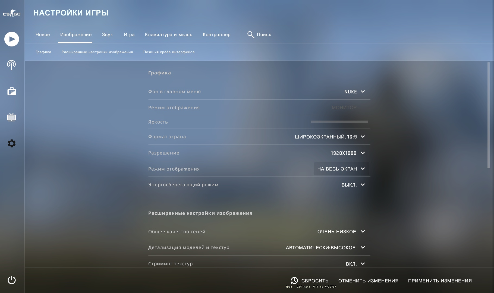
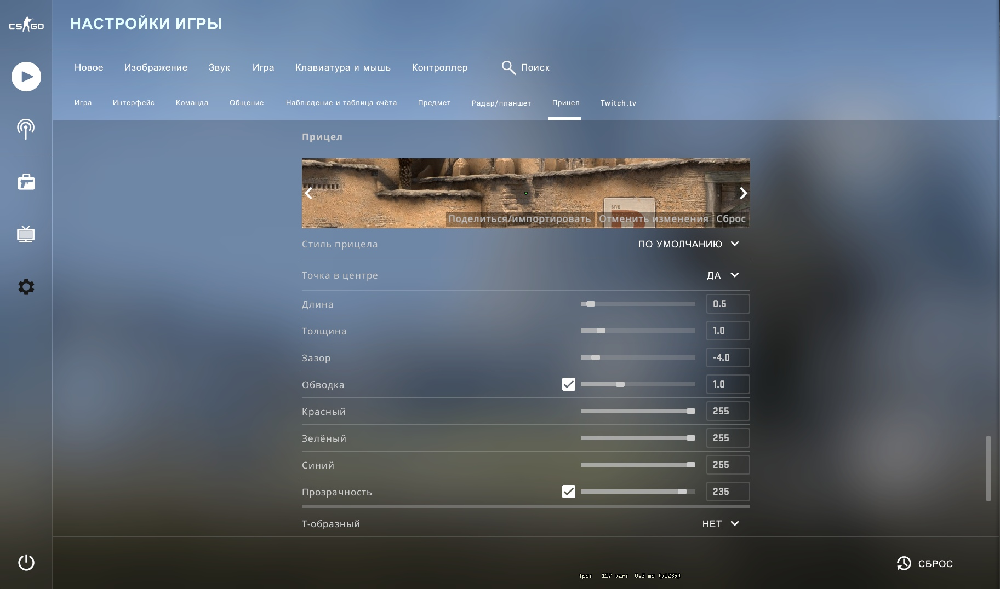

Советы
Карты
Лучшие карты, по нашему мнению, для игры в Соревновательном режиме:/
- Mirage
- Dust 2
- Inferno
Лучшие карты для игры в Напарники:
- Guard
- Cobblestone
- Lake
- Overpass
Настройки игры
Настройки графики
Каждая настройка графики и видео подбирается в индивидуальном порядке, поскольку у всех разные компьютеры и их технические характеристики. В данном гайде мы предлагаем настройки для средних и маломощных компьютеров.
Начать настраивать параметры видео следует в самой игре. Итак, следует зайти в настройки изображения.
На этой картинке показаны настройки графики такие как: качество теней, детализация моделей и текстур, стримин текстур. Настройки на этих картинках оптимальны для компьютеров средней мощности.
Бинды
Что такое бинды и для чего они вообще нужны? Бинды представляют собой команду или список команд, которые закрепляют за определенными клавишами то или иное действие. Иными словами, мы привязываем что-либо за определенной кнопкой на нашем клавиатуре или мыши.Так же бинды можно испльзовать для улучшения и удобства игрового процесса.
Для начала стоит начать с интерфеса, а точнее расположения рук, прицела и радара. Про оптмальную настроюку рук вы можете прочитать в следующей статье.
Карта в мастерькой steam при помощи которой вы можете настроить расположение рук персонально под себя.Правильная настройка радара играет ключевую роль в получении информации на карте.Оптимальные настройки радара.
cl_radar_always_centered 0
cl_hud_radar_scale 1.1
cl_radar_rotate 1
cl_radar_icon_scale_min 0.7
cl_radar_scale 0.3
Прицел
Настройки прицела не менее важная часть всех настроек.
На этом изображении настройки моего прицела. Для полноценных настроек прицела можно зайти на эту карту: Карта для настроек прицела.
